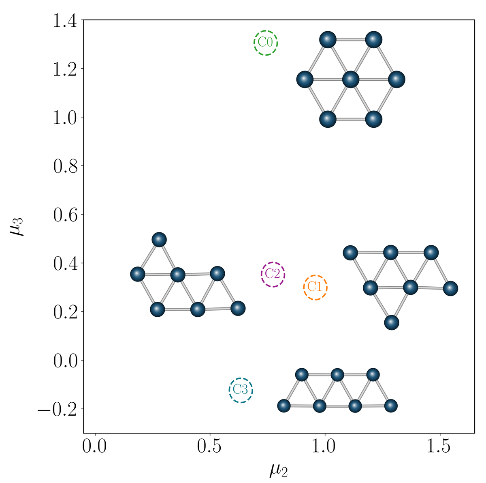
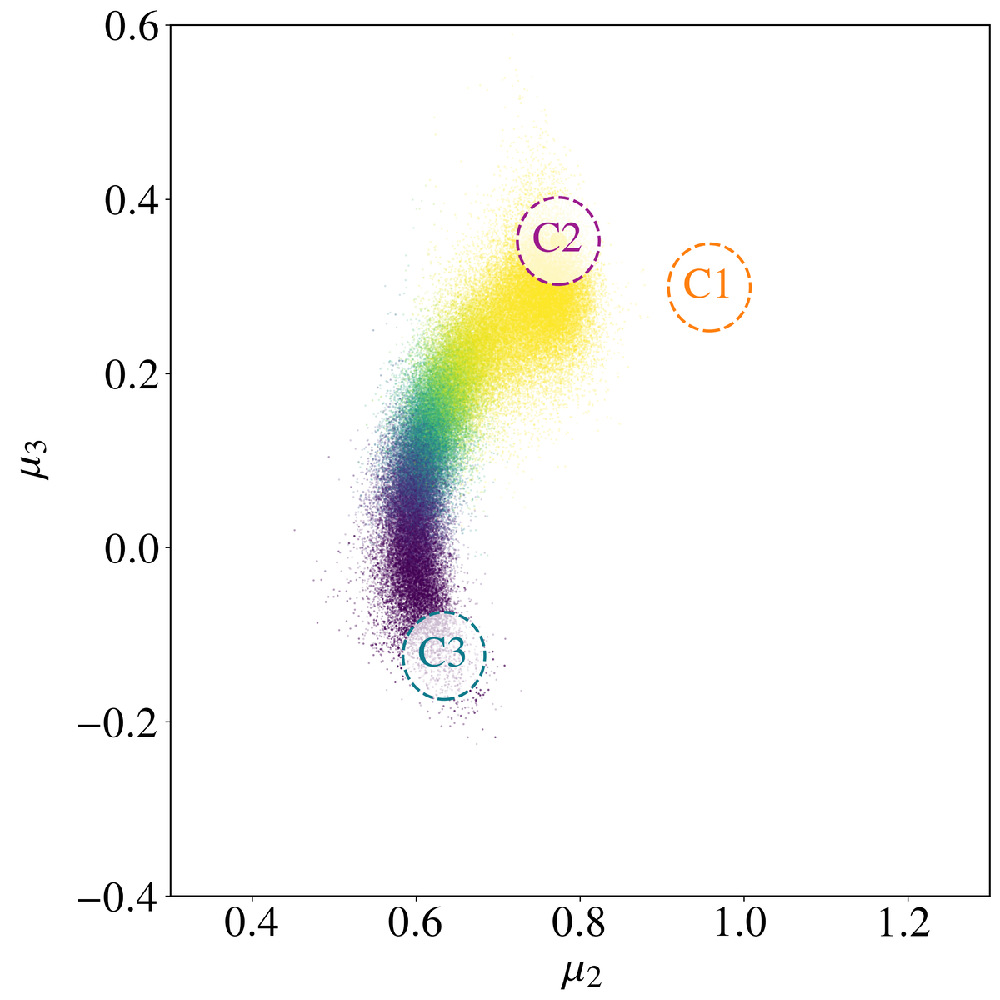
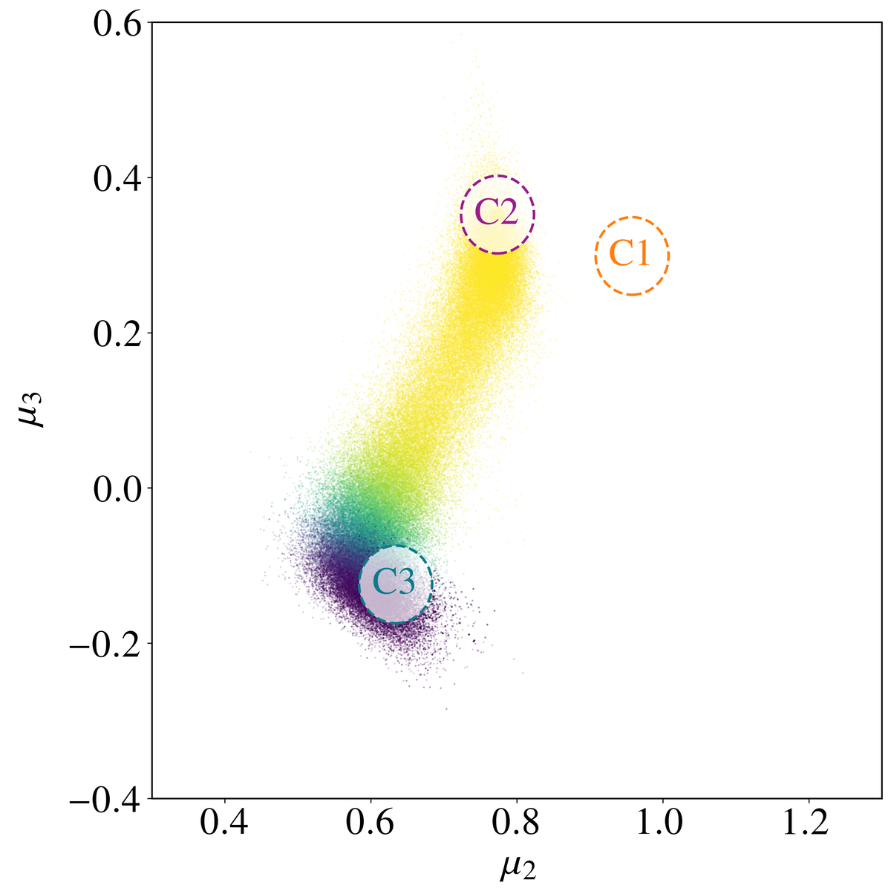
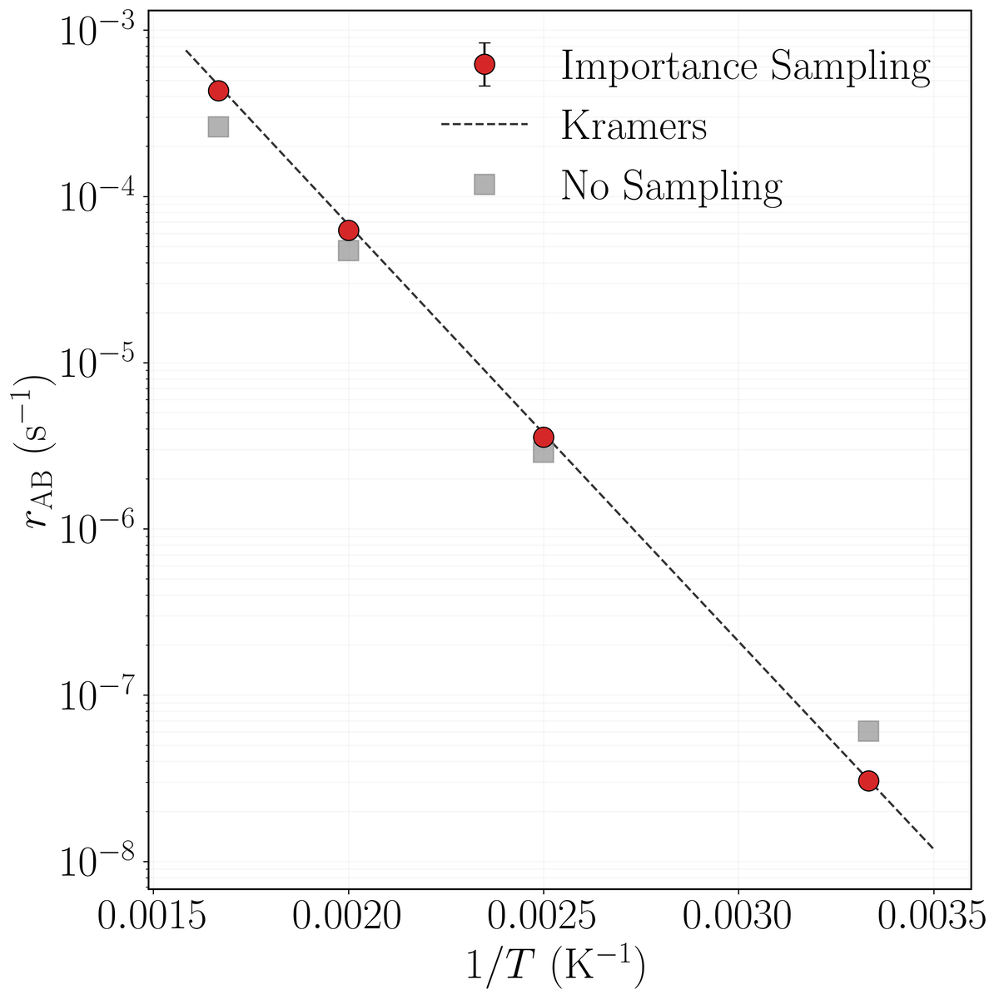
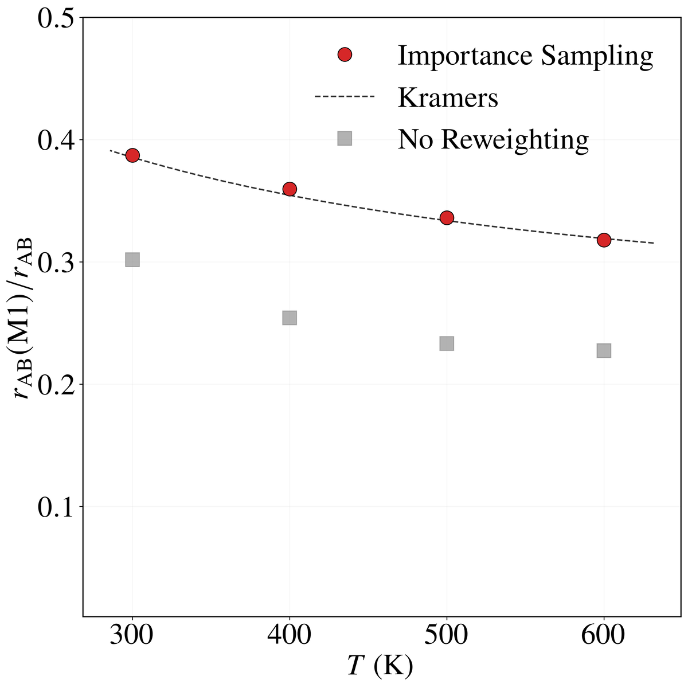
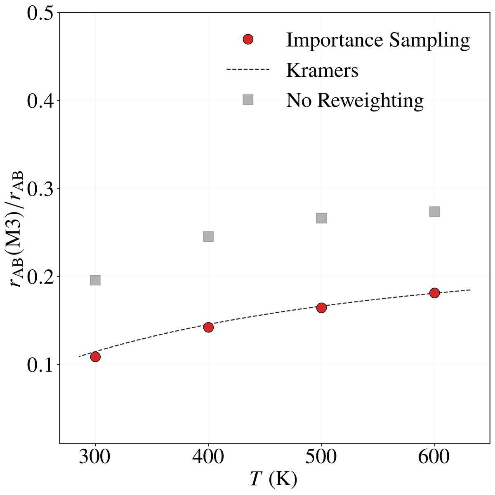
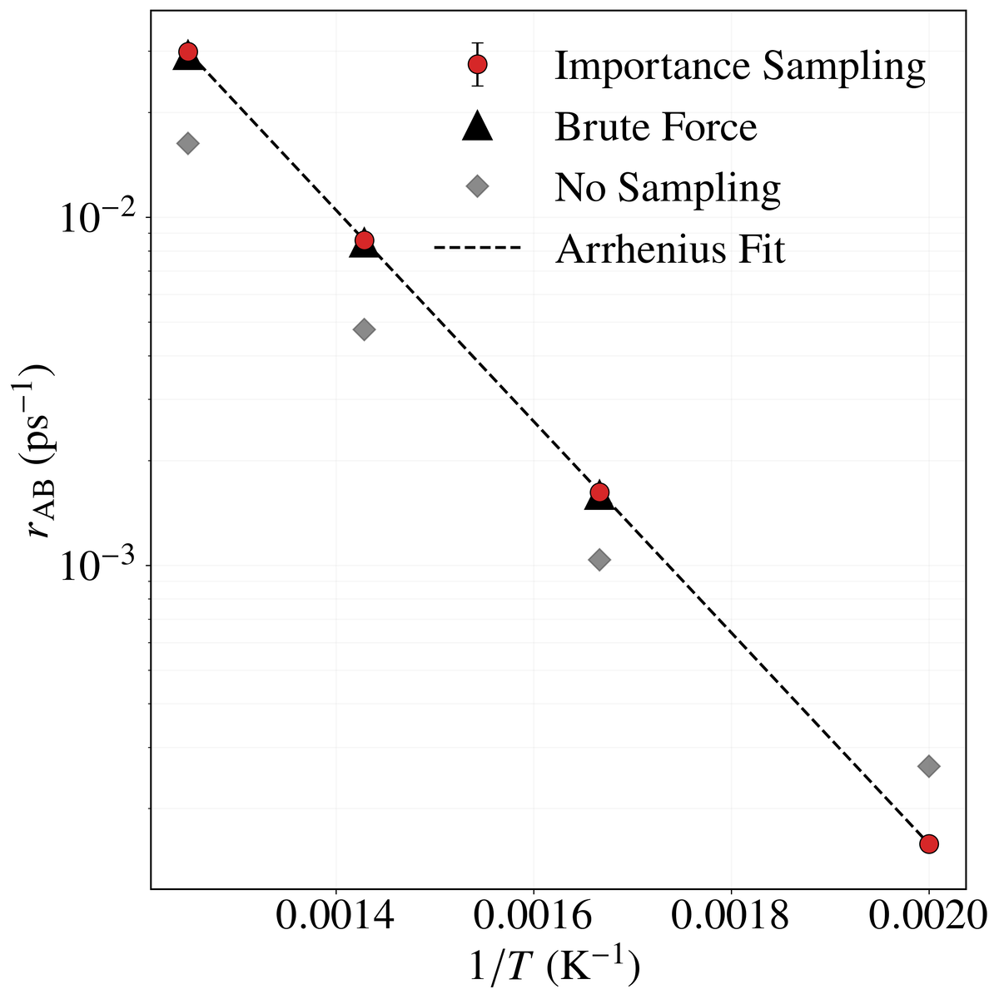

Overview
Rare transitions between metastable basins set the long-term evolution of atomistic systems. This work biases overdamped Langevin dynamics toward them with a neural-network importance function, then reweights the sampled paths to recover the original rate. For seven Lennard-Jones discs (LJ7) at 600 K, the weighted rate, (4.3215 ± 0.0098) × 10−4 fs−1 in model units, is close to the brute-force 4.4110 × 10−4 fs−1.
The ideal importance function, the committor (the probability of reaching the product before returning to the start), is intractable in high dimensions, and treating a learned one as exact carries its errors into the rate. Here those errors go into path weights, costing variance, not bias, in the success-probability estimate. No collective variable enters the importance function.
- Bias each step, not the potential. Each step resamples short unbiased trajectories by the importance function; no bias force is needed.
- Channels come with the rate. The same weighted paths resolve competing channels.
- From models to metals. A revision in preparation adds a Pt adatom and an iron vacancy (387 and 2055 coordinates).
The Rare-Event Problem
A configuration $\mathbf{x}$ with $d$ coordinates, in a domain $\Omega$, follows overdamped Langevin dynamics at temperature $T$:
where $U$ is the potential energy, $\gamma$ the friction coefficient, ${\beta = 1/(k_{\rm B}T)}$ with $k_{\rm B}$ Boltzmann's constant, and $\boldsymbol{W}$ a Wiener process. A long trajectory splits into short paths that leave a small region A in basin $\Omega_{\rm A}$ and either return to A (failure) or reach region B in basin $\Omega_{\rm B}$ (success); failures dominate (Figure 1). The rate, the inverse mean first-passage time, follows from the Hill relation
valid when the success probability $P_{\rm AB}$, the chance that a path leaving A reaches B, is small ${(P_{\rm AB} \ll 1)}$. The flux $J_{\rm A}$, the inverse mean time between escapes from A, is cheap; the tiny $P_{\rm AB}$ is not: importance sampling gives (9.0067 ± 0.0558) × 10−13 for Figure 1a's potential at 500 K.


Method
Biasing Each Step with an Importance Function
A path stores states ${\Gamma = \{\mathbf{x}_1, \dots, \mathbf{x}_N\}}$ a lag $\tau$ apart, and ${\mathcal{K}_\tau(\mathbf{y}\,|\,\mathbf{x})}$ is the density of the next state $\mathbf{y}$ given the current one, $\mathbf{x}$. As in earlier rare-event importance sampling (Cai et al., 2002; de Koning et al., 2005), each step is tilted by the ratio ${I(\mathbf{y})/I(\mathbf{x})}$ of an importance function $I$; since the tilted kernel is generally not normalized, it is divided by $Z_\tau$:
The optimal $I$, the committor (0 in A, 1 in B), needs no renormalization: ${Z_\tau \equiv 1}$. For a learned $I$, the deviation of $Z_\tau$ from 1 measures its error.
Path Weights and an Unbiased Estimator
Chaining biased steps relates the biased density $p'$ of a success path $\Gamma_{\rm AB}$ exactly to its original density $p$:
For the committor, all success paths from a start $\mathbf{x}_1$ gain the same factor, preserving channel ratios; otherwise the factors $Z_\tau$ form a path weight $W$, and $P_{\rm AB}$ becomes a weighted average over biased paths:
where $R(\Gamma)$ is 1 for success and 0 otherwise, and $\mathbb{E}'$ averages over ${\mathcal{K}'_\tau}$ paths starting from $\rho_{\rm A}$, the distribution of states leaving A. The estimate is unbiased for any positive $I$; a poorer $I$ only spreads the weights. Restricting $R$ to one channel gives its share; the rate follows from the Hill relation. The committor-only estimate instead plugs the network into ${\int \rho_{\rm A}\, I \,\mathrm{d}\mathbf{x}_1}$, the “reactive probability” of earlier work (Mitchell and Rotskoff, 2024; Lorpaiboon et al., 2025), exact only for the committor.
Each $Z_\tau(\mathbf{x})$ is estimated without bias as the mean of ${I(\mathbf{y}_i)/I(\mathbf{x})}$ over the end points $\mathbf{y}_i$ of 100 short unbiased trajectories from $\mathbf{x}$; one end point, drawn in proportion to $I(\mathbf{y}_i)$, becomes the next state. A branching random walk curbs weight spread: as in Monte Carlo particle transport, a path whose weight leaves a set window becomes a random number of unit-weight copies, possibly none, preserving its weight on average.
Learning the Importance Function
The network ${I(\mathbf{x};\theta)}$, with parameters $\theta$, is trained on the normalization condition for $I$ and for the reverse-transition importance function ${1 - I}$, using a loss from earlier committor-learning work (Mitchell and Rotskoff, 2024; Trizio et al., 2025):
where $\bar{Z}_\tau$ is $Z_\tau$ with ${1 - I}$ in place of $I$; the loss vanishes for the committor. For LJ7 and the metals, $I$ is a SchNet-style graph network on interatomic distances. A descriptor-free graph-network committor was learned before (Kang et al., 2026), but without the path-weight correction.
Results
| System | d | Importance sampling | Reference |
|---|---|---|---|
| 2-D potential, 500 K | 2 | (7.2717 ± 0.0450) × 10−12 fs−1 | 7.1755 × 10−12 fs−1 Kramers theory |
| LJ7, 600 K | 14 | (4.3215 ± 0.0098) × 10−4 fs−1 | 4.4110 × 10−4 fs−1 brute force |
| Pt adatom, 1000 K † | 387 | (4.7242 ± 0.0393) × 10−2 ps−1 | [4.5763, 4.8995] × 10−2 ps−1 brute force, 95% CI |
| Fe vacancy, 800 K † | 2055 | (2.9911 ± 0.0252) × 10−2 ps−1 | 2.9287 × 10−2 ps−1 brute force |
Table 1. Values after ± are one standard error of the mean, excluding the error of $J_{\rm A}$ in the first three rows; the LJ7 and Fe brute-force rates have no stated uncertainty. Model systems use model units (eV, nm, fs). † Revised manuscript in preparation.
Two-Channel Potential: Rate and Channel Split Match Kramers Theory
On Figure 1a's potential at 500 K, with barriers of 1.10 eV (S1) and 1.06 eV (S2) above the minima, the weighted rate matches Kramers rate theory, evaluated without the harmonic approximation (Table 1); the committor-only estimate is nearly a factor of three low. The share through the saddle region near S1 is 0.2972 ± 0.0023 (Kramers: 0.2938); counting paths without weights gives 0.4483, roughly 50% high. A separate network trained on both directions gives (7.2093 ± 0.0472) and (7.3635 ± 0.0528) × 10−12 fs−1 forward and backward, against the same Kramers value.
LJ7: Rates and Mechanisms Recovered Down to 300 K
The seven soft-core LJ7 discs ${(d = 14)}$ escape from a C3 minimum to C2 states by four mechanisms (Figure 2): two atoms slide along an edge in M1 and M2 (barrier 0.49 eV), three in M3 and M4 (0.52 eV). At 600 K the weighted rate agrees with brute force and the committor-only estimate is about 40% low. Weighted mode fractions reproduce brute force, about 32% each for M1 and M2 and 18% each for M3 and M4, whereas unweighted counts favor M3 and M4, the wrong trend.



Below 600 K, where brute force cannot collect enough transitions, harmonic Kramers theory is the reference. Networks fine-tuned from the 600 K one track it, the gap shrinking from about 7% at 500 K to about 1% at 300 K as the harmonic approximation improves (Figure 3). Unweighted counts underestimate M1 and M2 at every temperature.



Metals (Revision in Preparation): Brute‑Force Rates Reproduced
These results are from a revised manuscript in preparation, not the linked ChemRxiv v2 PDF. The network reads a fixed cluster of 26 or 50 atoms around the defect, so defects that move farther will need larger inputs; the dynamics and weights use every coordinate. Importance sampling and brute force both use overdamped dynamics, whose rate prefactors differ from inertial molecular dynamics.
Pt adatom on Pt(001), ${d = 387}$. At 1000 K the rate falls inside the brute-force confidence interval (Table 1), and the fractions of twelve transition modes agree with brute force within 0.007. An unanticipated long-jump channel carries 0.0930 of the rate (brute force: 0.0891; unweighted counts: 0.0520).
Vacancy in bcc α-Fe, ${d = 2055}$. At 800 K the weighted rate is within 2.1% of brute force; the committor-only estimate is about 44% low.
No retraining at lower temperatures. As the rate drops more than sevenfold to 700 K, the unchanged adatom network gives rates inside the brute-force 95% confidence intervals at 800 and 700 K and 4% above the upper bound at 900 K; its nearly flat committor-only rate is about 3.6 times too high at 700 K. The vacancy network's rates stay within 3% of brute force from 800 to 600 K and within 2% of the extrapolated Arrhenius fit at 500 K (Figure 4), though their relative uncertainty grows from 0.8% to 3.5% at 500 K.

Takeaway
Outlook
The paper names two future directions: larger atomistic systems (dislocations, grain boundaries, protein conformational transitions) and integration with the molecular dynamics packages OpenMM and LAMMPS. The companion paper, Accelerated MCMC, treats discrete systems; the agent-guided protein kinetics project builds on both. See also Accelerated Atomistic Simulations.